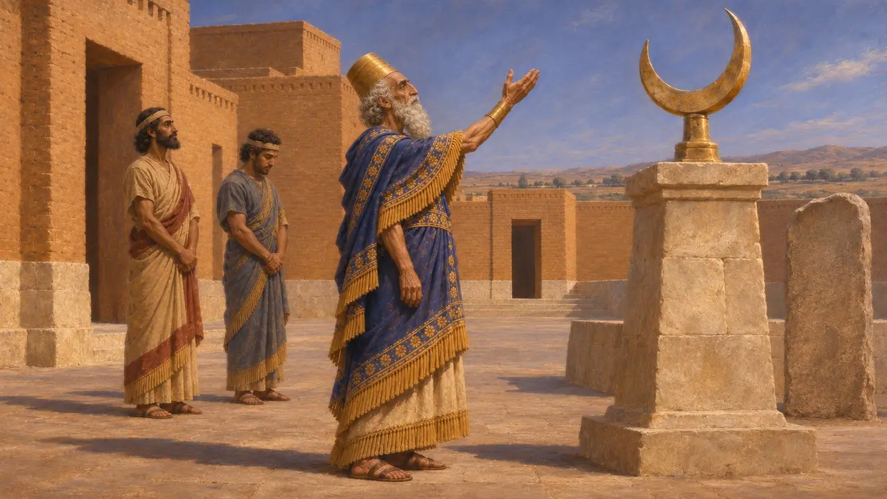
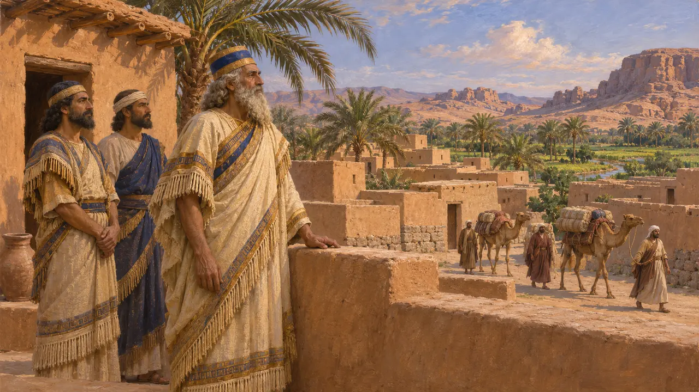
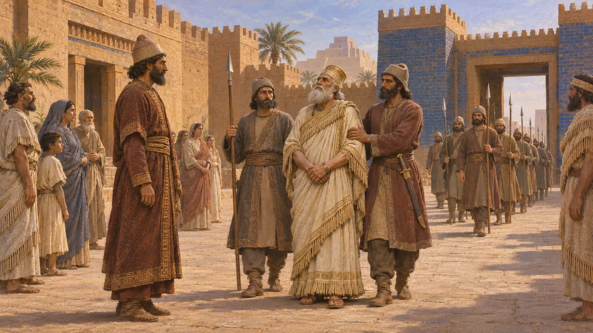
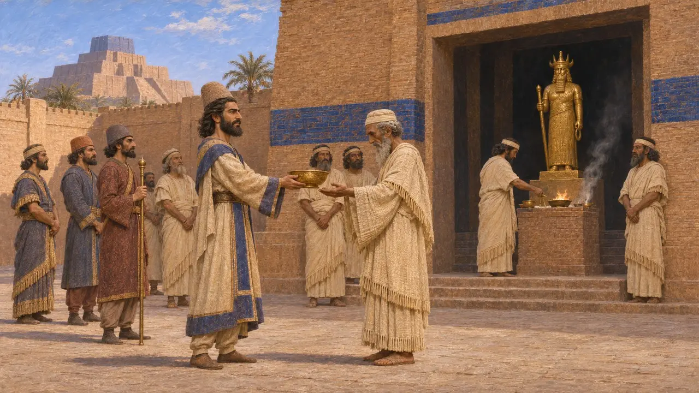
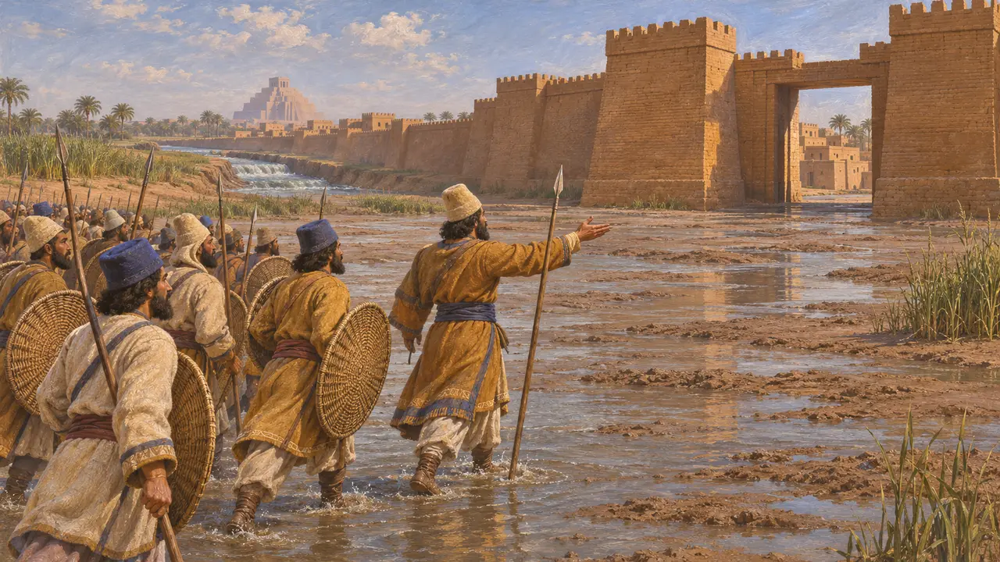
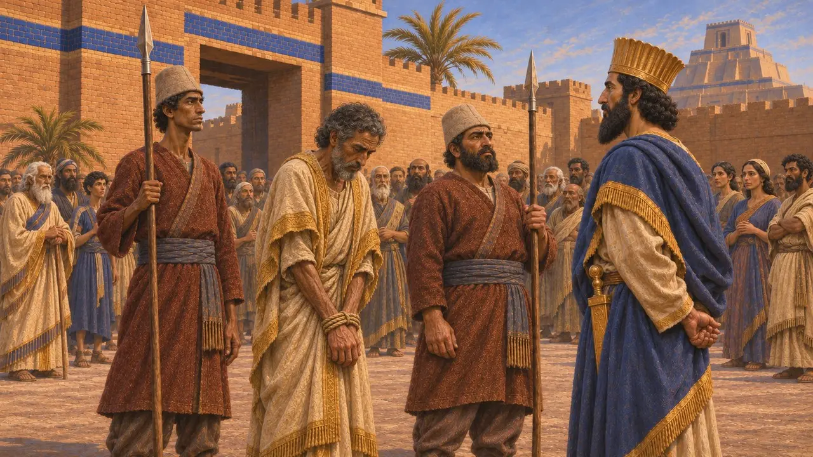
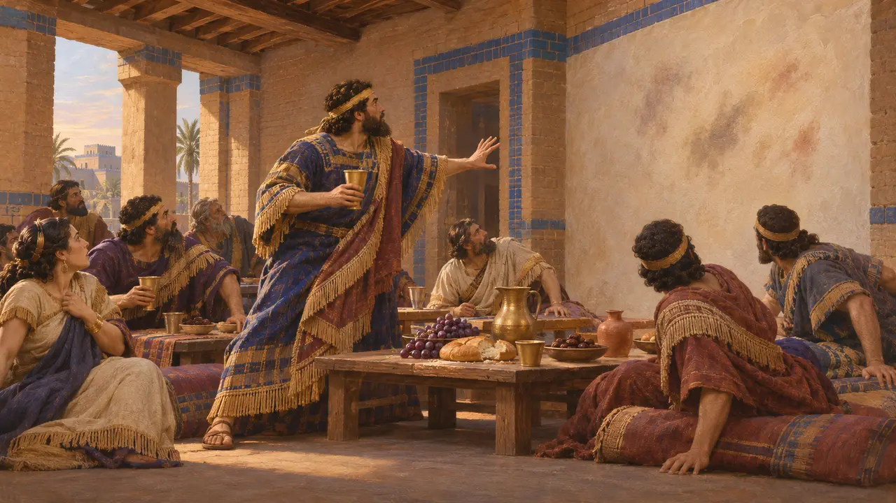

نبونيد
آخر ملك بابلي من أهل البلاد، حكم 556-539 ق.م، وخلعه قورش
حكم نبونيد بابل نحو سبع عشرة سنة، وكان آخر ملوكها من أهلها قبل أن يستولي قورش على المدينة عام 539 ق.م. وتصوّره النصوص المكتوبة في عهد قورش حاكمًا كافرًا، وهذه الصورة تشكّل جزءًا كبيرًا مما يُعرف عنه. وادّعى متمرّدان على داريوس أنهما ابنه، وهو ما يدل على أن اسمه ظل ذا وزن.
في اللعبة: لا يملك نبونيد مرحلة ولا آلية خاصة به. وتذكره اللعبة فقط في مقالات الأحداث عن سقوط بابل، وعودة المنفيين، وثورتي نيدينتو-بيل وأراخا.

ملك من خارج الأسرة القديمة
في السجلاتاعتلى نبونيد العرش عام 556 ق.م بعد انقلاب في السنوات المضطربة التي تلت عهد نبوخذنصر الثاني. ولم يكن من سلالة نبوخذنصر. وتُظهر النقوش من عهده، ومنها لوحة أمه أدّا-غوبي التي عُثر عليها في حرّان، إخلاصه لإله القمر سين.
Harran stele of Nabonidus; P. Briant, From Cyrus to Alexander, 2002

سنوات تيماء
متنازع عليهتذكر حولية نبونيد أن الملك أمضى سنوات في واحة تيماء في بلاد العرب، وأن عيد رأس السنة لم يُحتفل به في بابل في تلك السنوات. ولا تذكر الحولية أسبابه. وقد اقترح المؤرخون السيطرة على تجارة القوافل، وتعبّده للإله سين، وخلافًا مع كهنوت بابل، وتقدّم نصوص معادية تفسيرات أخرى.
Nabonidus Chronicle (ABC 7)


نبونيد في رواية قورش
في السجلاتتلوم أسطوانة قورش نبونيد على إهماله شعائر بابل وعلى أفعال تنافي التقوى، وتقول إن مردوخ اختار قورش ليعيد النظام. وهذه رواية المنتصر، كُتبت بأسلوب المعابد البابلية، وهي دعاية؛ أما الحولية فهي أقل عداءً للملك.
Cyrus Cylinder

ما يقوله الكتّاب اليونانيون ومن جاء بعدهم
رواية قديمةيسمّي هيرودوت ملك بابل لابينيتوس، ويقول إن قورش هزمه في معركة، ويصف الاستيلاء على المدينة بتحويل مجرى الفرات. أما بيروسوس، كما ينقل عنه يوسيفوس، فيقول إن نبونيد استسلم وأسكنه قورش في كرمانيا. ولا يتّفق الروايتان في التفاصيل، ولا تطابق أيٌّ منهما الحولية مطابقة وثيقة.
Herodotus 1.188-191; Josephus, Against Apion 1

المتمردون الذين ادّعوا اسمه
في السجلاتيذكر نقش داريوس في بهستون أن نيدينتو-بيل اتخذ في عام 522 ق.م اسم نبوخذنصر وادّعى أنه ابن نبونيد. وقد ادّعى أراخا، وهو أرمني، الادعاء نفسه في عام 521 ق.م. ويقول داريوس إن كليهما هُزم وقُتل في بابل.
DB §16; DB §49-50

بيلشاصر وسفر دانيال
أسطورة لاحقةيجعل سفر دانيال بيلشصر آخر ملوك بابل، ويروي قصة مأدبة قطعتها كتابة ظهرت على الجدار. وتبيّن النصوص المسمارية أن بيلشصر كان ابن نبونيد، وأنه على الأرجح كان ينوب عن أبيه أثناء غياب الملك. ولم يكن هو نفسه ملكًا، أما قصة المأدبة فحكاية أخلاقية كُتبت بعد ذلك بزمن طويل.
Book of Daniel 5
المصادر
- Nabonidus Chronicle (ABC 7)
- Cyrus Cylinder
- DB §16 and §49-50
- Herodotus 1.188-191
- Josephus, Against Apion 1
- P. Briant, From Cyrus to Alexander, 2002